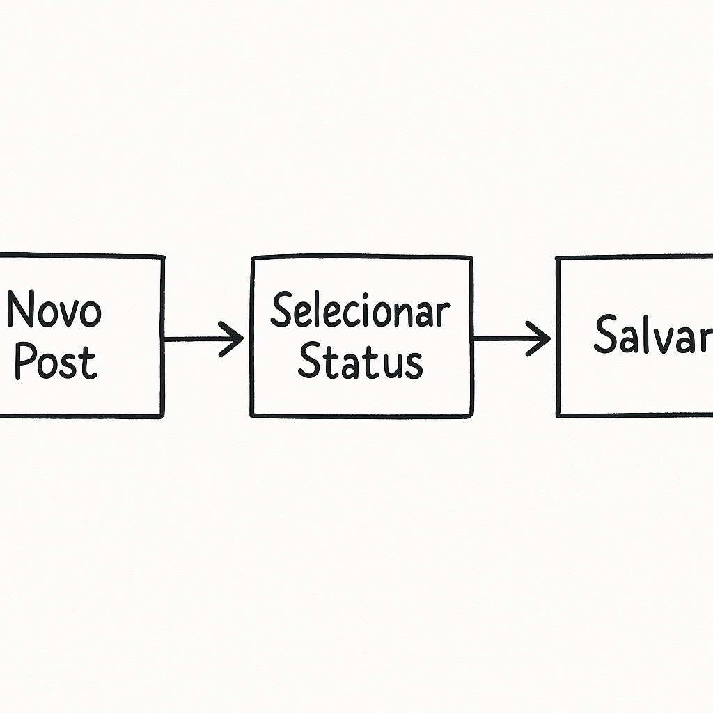
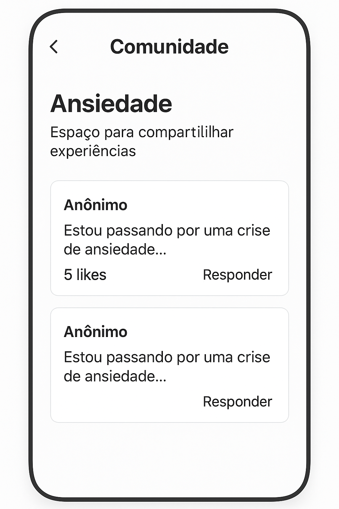
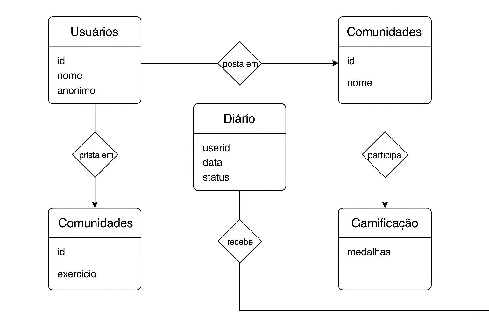

Introdução
O Fórum Reequilibra é uma plataforma de apoio emocional com:
- Diário emocional
- Comunidades de apoio
- Recursos científicos
- Ferramentas interativas

Recursos Principais
Diário Emocional
Registro diário de sentimentos e experiências
{
"id": "",
"userid": "1",
"data": "2025-04-24",
"titulo": "Dia difícil na faculdade",
"status": 1,
"conteudo": "Hoje foi um dia muito complicado na faculdade...",
"favorito": false
}
Comunidades
Fóruns temáticos de apoio
{
"id": "1",
"nome": "Ansiedade",
"descricao": "Espaço para compartilhar experiências",
"posts": [
{
"id": 101,
"autor": "Anônimo",
"conteudo": "Estou passando por uma crise de ansiedade...",
"likes": 5
}
]
}

Demonstração Interativa
Tópicos Recentes
Conclusão
Benefícios
- Acesso a informações confiáveis
- Suporte comunitário
- Ferramentas de autocuidado
Próximos Passos
- Integração com APIs de saúde
- Sistema de notificações
- Versão mobile
Obrigado pela atenção!
Perguntas?
Arquitetura dos Dados
Relacionamento entre usuários, diário emocional e comunidades.
